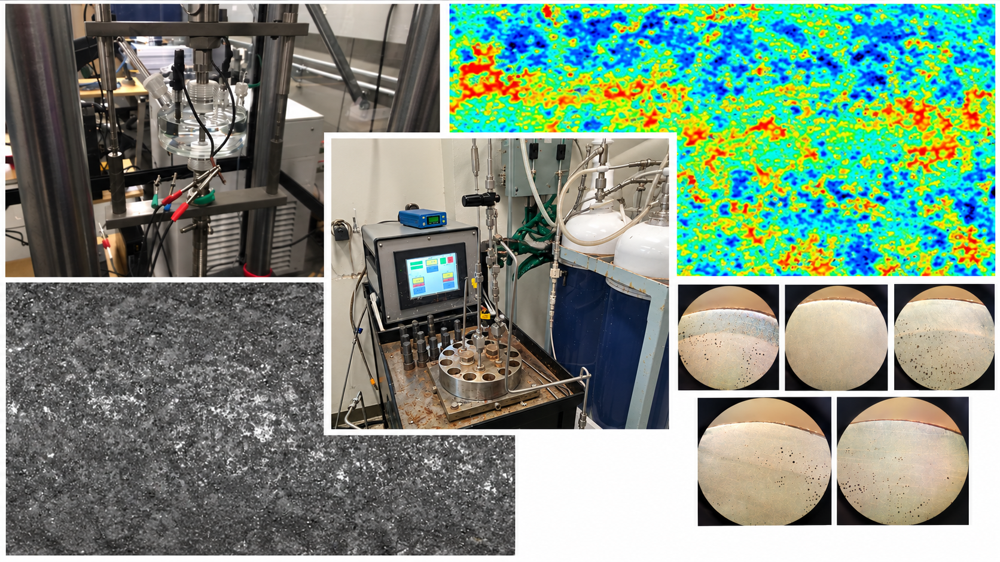
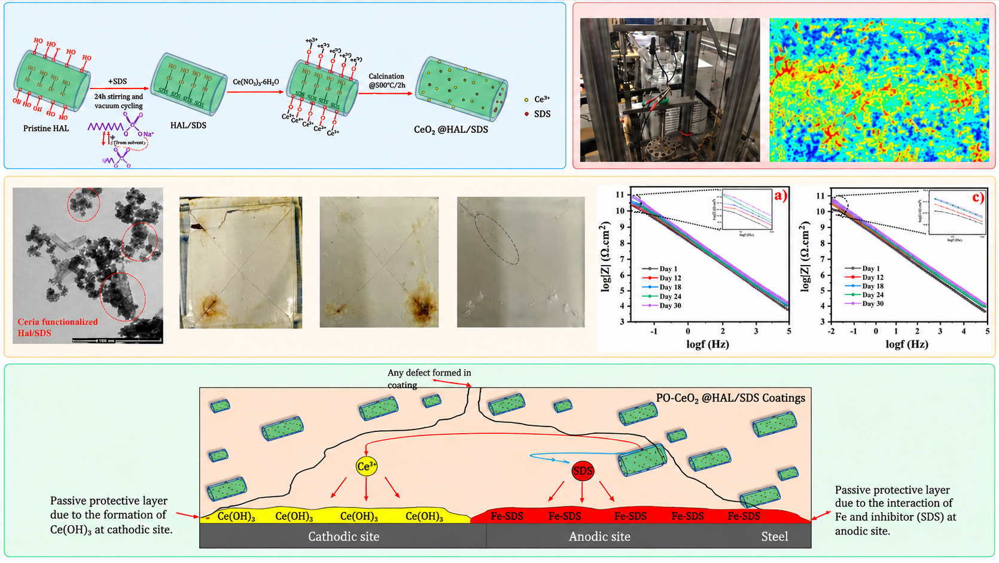
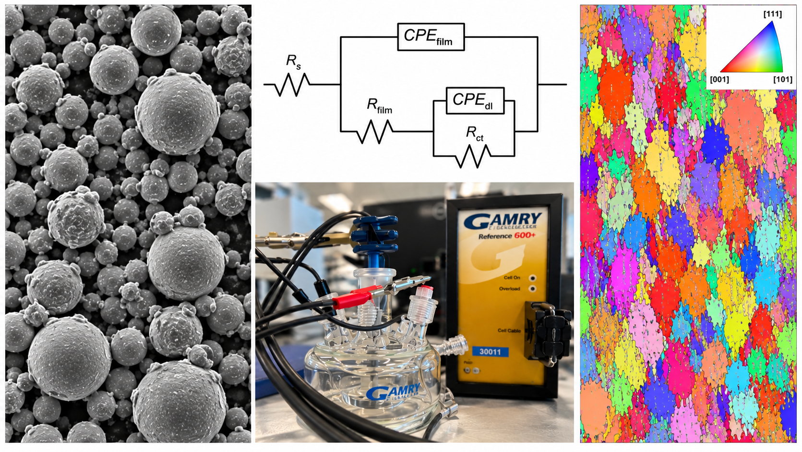
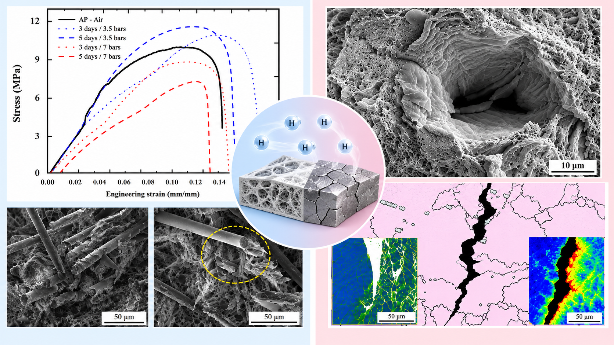
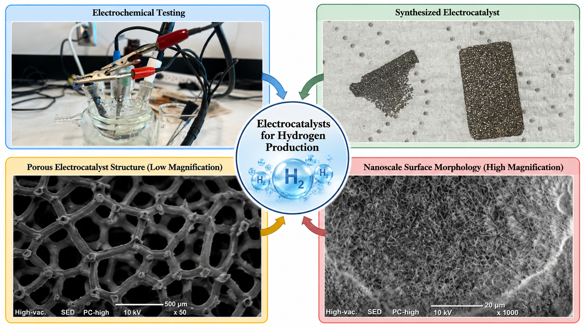

Selected Research

Dense-Phase CO₂ & Sour Corrosion
Investigated corrosion and materials degradation in high-pressure dense and supercritical CO₂ environments and H₂S-containing systems, with emphasis on pipeline materials, environmental conditions, and impurity effects

Polymeric Coatings & Corrosion Protection
Developed and evaluated samrt functional polymeric coatings for corrosion protection, specifically nanomaterial-modified coatings, corrosion inhibitor delivery, self-healing behavior, and long-term electrochemical performance

Additive Manufacturing & Alloy Performance
Investigated the processing, microstructure, corrosion behavior, stress corrosion susceptibility, and mechanical performance of additively manufactured metallic alloys under demanding service environments

Hydrogen–Material Interactions
Studyied the response of metallic alloys and polymer composites to hydrogen exposure, understanding degradation mechanisms, mechanical performance, and long-term materials reliability

Electrocatalysts for Hydrogen Production
Optimized and assessed electrocatalytic materials for hydrogen production and water electrolysis, with emphasis on catalytic activity, electrochemical performance, and operation in challenging electrolyte environments